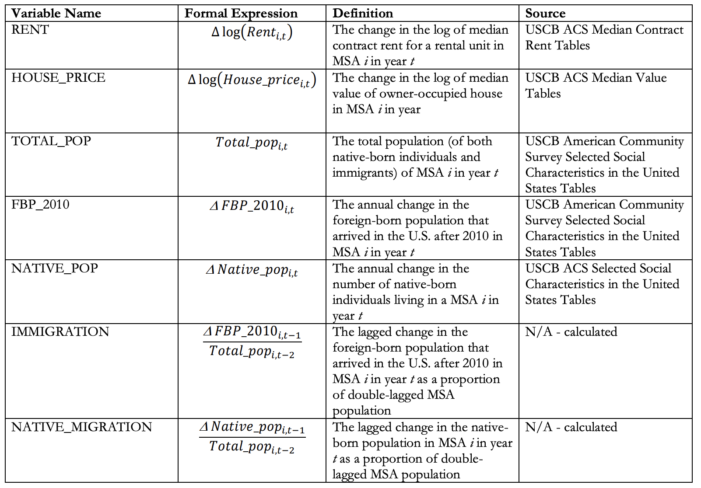
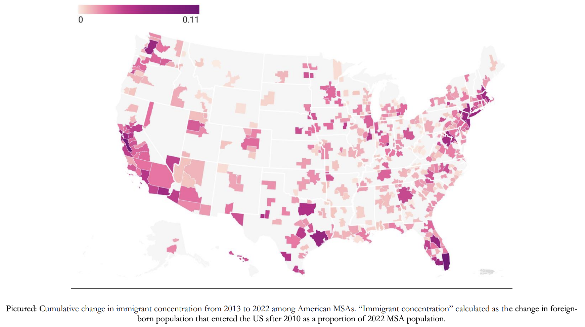
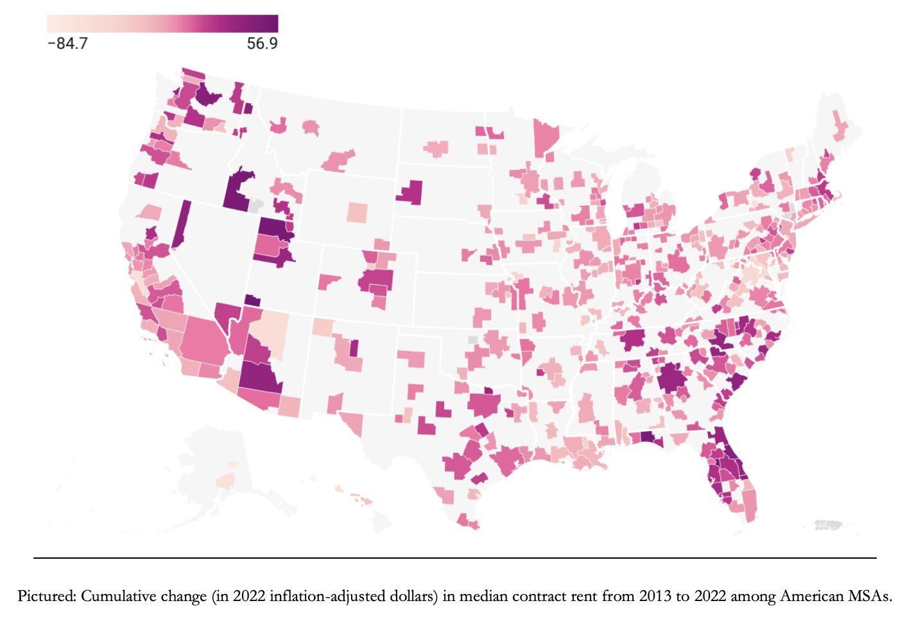
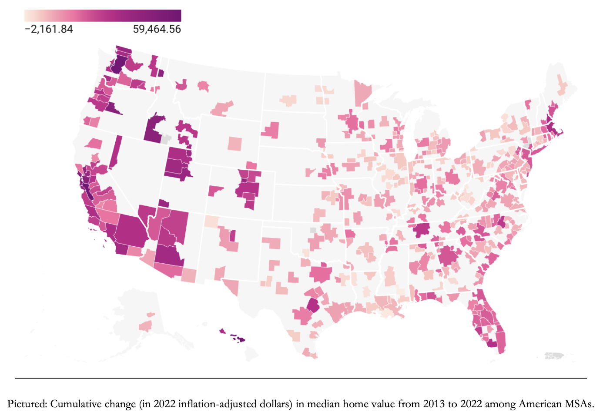
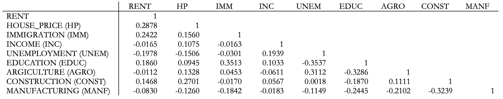

Abstract
This study investigates the impact of foreign immigration on rental rates and owneroccupied house prices in metropolitan areas in the United States. Using a panel dataset that covers 381 American metropolitan areas from 2013 to 2022, I demonstrate that immigration may have a significantly positive short-term effect on housing prices. After implementing a version of the classic shift-share instrument to control for the endogeneity of immigration and housing costs, I find that a 1% increase in immigrant concentration as a proportion of total metropolitan area population leads to about a 2% increase in rental rates and a 3% increase in house prices. However, when I decompose the total effect of immigration on housing costs into the effect solely due to increases in immigrant demand and the effect due to induced native migration, I discover that only 18.4% of the total effect on housing costs can be attributed to direct demand from immigrant inflow. Lastly, I find that the impact of immigration on house prices is significantly higher at the upper end of the house price distribution.
Acknowledgements
First and foremost, I would like to thank my advisor, Professor Richard Sicotte, for his continued encouragement throughout this entire process. I am incredibly grateful for his guidance and expertise.
Thank you to Professor Sicotte, Professor Peter Henne, and Professor Erkmen Aslim for generously taking the time to sit on my thesis defense committee. Their feedback is greatly appreciated.
I would also like to thank Professor Sicotte, Professor Aslim, as well as Professor Donna Ramirez-Harrington for molding me into a better economist during my time at UVM. Their instruction has been pivotal in developing the analytical and econometric skills necessary to undertake a project of this magnitude. Their support for me while my project was still in its early stages is not to be overlooked.
Finally, I would like to thank my parents for instilling in me a love of learning and for pushing me to achieve more than I ever knew I was capable of in the classroom. I owe everything to both of you.
Introduction
Immigration has always been a hotly debated topic in American political circles, though it has emerged as a particularly divisive issue as the 21st century has progressed. The debate surrounding immigration policy is not unfounded; the U.S. has historically been a prime destination for immigrants from all corners of the globe. In more recent times, these immigration trends have not shown any signs of slowing down. In 2025, about 53.3 million immigrants are estimated to live in the United States, comprising about 16% of the country’s population (Carmotta & Zeigler, 2025). More importantly, immigrant inflows have been quite substantial, as since 2009, the immigrant population in the United States grew by about 16 million, which would equate to about a 43% increase in the country’s total immigrant stock. This growth is far from insignificant: for example, immigration is estimated to account for more than 80% of the overall U.S. population growth in 2024 (Congressional Budget Office, 2024). Clearly, immigration is a primary driver of demographic changes in the United States. It is also a pivotal factor dictating changes in economic trends.
The economic outcomes most often linked to immigration pertain to the labor market. In both the academic literature and the political discourse surrounding the effects on immigration in the U.S., much effort has been dedicated to showing the impacts of immigration on labor market outcomes such as the wage rate and employment of native-born workers. However, the impact of immigrants on other sectors of the U.S. economy is largely overlooked. One of those sectors that has only recently surged to the forefront of the immigration literature is the housing market.
The state of the housing market has always been considered a key barometer of the economic health of almost any developed nation, and the U.S. is no different in that regard. The housing market represents another domain in which immigrants potentially compete with nativeborn individuals; much concern has been expressed that immigration drives up housing costs and displaces incumbent native-born residents. Indeed, housing costs are rising in a manner similar to the American immigrant stock: since 2011, the median monthly rate for a rental unit in the United States has increased almost 19%, while the median value of an owner-occupied home has grown by about 44% (Fabina, 2024). Given that the growth in immigrant population in the U.S. during the 2010s and into the 2020s has mirrored the growth in housing costs, there is reason to believe that there may be a causal link between the two.
This paper provides evidence that, in the short term, immigration may, in fact, lead to higher rents and house prices. To accomplish this, I utilize a panel of 381 metropolitan areas in the United States over the period from 2013 to 2022. The fact that immigrant inflows may be endogenous to rental rates and house prices poses an issue of reverse causality that I attempt to resolve through the use of a shift-share instrument. This strategy essentially entails using past immigrant settlement patterns to predict future inflows. Using this instrumental variable technique, I estimate that immigration has a significantly positive short-term effect on both rental rates and house prices. My results indicate that an increase in immigrant inflow equal to 1% of a metropolitan area’s population equates to around a 2% in rental rates and a 3% increase in house prices. This type of an effect, which has been observed throughout the relevant literature, suggests that immigrants do not displace natives through competition for vacant housing. In fact, not only do my findings insinuate that native displacement is not occurring, through my decomposition of the total demand effect of immigration on the housing market into the effects from direct demand of immigrants and induced demand caused by native migration, I find that substantial native inflow is expected to accompany immigrant inflow. Because of this, I estimate that only 18.4% of the total demand effect of immigration on rental rates and house prices is actually due to immigration. Finally, I suspect that immigration may not have the same effect in areas where house prices are rising as it does in areas where they are falling or not growing quickly. I find that, while there is no statistically significant difference between the effects of immigration on the lower and upper ends of the rent distribution, immigration has a more profound effect on the upper end of the house price distribution.
This study makes several important contributions to the economic literature surrounding the effect of immigration on the housing market. First of all, most papers that concern the effect of immigration on the housing market in the United States are quite limited in terms of geographical scope, with a number of such studies analyzing only one region or city, such as New York City (Finney, 2024) or Miami (Card, 1990; Saiz 2003). Saiz (2007) and Partridge, et. al. (2009) do estimate the effects of immigration on rental rates and house prices in the U.S. on a national scale, but outside of these studies, there is little recent empirical work on this particular matter. Additionally, this paper seeks to establish a causal link between immigration inflows and housing cost dynamics by controlling for potential economic drivers of migration, such as income, unemployment, and education, as well as the historical settlement patterns of immigrants. By accounting for these factors, I can more realistically argue that any change in rental rates or house prices that I observe are caused by immigration, as opposed to housing costs being the reason for immigration. This study also decomposes the total effect of immigration on housing costs into the sum of the direct demand effect of immigrants and the induced demand effects from population shifts caused by immigration. While the mobility of native-born individuals has been described by many authors as a potential confounding factor in estimating the effect of immigration on housing costs, only recently has that effect actually begun to be quantified within the literature. While Sanchis-Guarner (2023) and Unal, et. al. (2024) employ such a technique to investigate the direct demand effect of immigration on house prices, in Spain and Germany, respectively, this paper is one of the few existing studies to attempt to estimate the direct effect of immigration on both rental rates and house prices in the United States. Finally, this study adds to a limited body of literature that quantifies how immigration affects the lower and higher ends of the rent and house prices distributions. As with the decomposition of the total effect of immigration, only a handful of studies empirically test for the heterogeneity of the effect of immigration on housing costs. While the analyses conducted in that regard by Saiz (2003), Braakmann (2019), and Unal, et. al. (2024) either do not concern the United States or are quite narrow in scope, I investigate how the effect of immigration on housing costs varies across the nationwide housing cost distribution.
The structure of the remainder of the paper is as follows: Section 2 reviews the relevant literature concerning the effect of immigration on housing costs. Section 3 describes my data sources and explain the restrictions on the study period. Section 4 provides an overview of the patterns in immigration and housing cost dynamics across American metropolitan areas throughout my sample period. Section 5 discusses each of my identification techniques: my main empirical model, instrumental variable construction, and decomposition of the total effect into partial effects. Section 6 displays the results of implementing each of these empirical strategies. In Section 7, I run several robustness checks, and Section 8 concludes.
Literature Review
Until fairly recently, the theoretical and empirical literature exploring the impact of immigration on native-born individuals’ economic well-being has been centered around how immigration affects labor market indicators for native workers, namely wages and employment rates. Borjas (1994) and Friedberg & Hunt (1995) have found the effects of immigration on native economic outcomes to be largely inconsequential in their own analyses of the themes commonly observed in the literature concerning the economics of immigration to the U.S. However, the effects of immigration on the labor market outcomes of native-born workers can vary drastically depending on factors such location, era, skill levels of native workers and immigrants, among others (Edo, 2019).
Since then, interest has grown in investigating the effect of immigration on other aspects of the receiving economy outside of the labor market. An early analysis of the impacts of immigration on another such sector – the housing market – can be seen with case study of the effects of the 1980 Mariel boatlift, which saw tens of thousands of Cuban defectors flock to the Miami, Florida metropolitan area. What makes an event such as the Mariel boatlift such an appealing medium for the study of the economic effects of immigration is the fact that, in this instance, migrants are, more or less, randomly assigned to a destination location. When estimating the effect of immigration on an economic outcome, such as rental rates, in a certain area, it is often true that immigrants are attracted to areas that have more favorable economic conditions, which would include lower rental rates. Given this, any estimation of the effect of immigration on rental rates would suffer from selfselection bias because it would be capturing some of the effect that the rents have on the decision to immigrate to an area. This issue, better known as “endogeneity”, is mitigated in a study of the effect of immigration using the Mariel boatlift, in which the destination of the immigrants is predetermined (because the Mariel immigrants had no say in where they settled, selection bias is essentially eliminated).
By replicating Card’s (1990) experimental design but using the price of rental housing units as the outcome variable, Saiz (2003) takes advantage of the “natural experiment” presented by the Mariel boatlift. He finds that the boatlift increased the Miami area’s renter population by 9% over a 2-year span. This growth in the renter population led to the growth rate of rental prices rising 8 percentage points during that same time frame, suggesting that the Miami area’s rental housing market experienced negative short-run effects due to the immigration shock. Additionally, a few similar studies have been conducted to assess the impact of other exogenous shocks, or sudden waves of migrants, on the demand for and the price of rental housing. For example, the inflow of Syrian refugees in southeastern Turkey was found to have raised the rental rate of the average apartment by about 5.5% (Tumen, 2016). The effect of such influxes seemed to lessen as the scope of the region became larger, as was the case with Venezuelan migrants into Colombia’s most populated metro areas (Forero-Vargas & Iturra, 2022). While the Mariel study and related experiments offer insights as to why the housing markets of certain areas might react negatively to immigration, not many like them exist in the body of immigration literature. This is because relatively few migration events exist in recent history where immigrants are randomly assigned to destination locations.
The more common type of study tends to look for the effect of a consistent flow of immigration on rental rates and the prices of owner-occupied homes over a span of several years, as this is how larger developed nations normally experience immigrant inflows. In such studies, immigrants settle in many different parts of the destination region at different times, meaning that endogeneity becomes an issue once again. To combat this, these studies implement one or more instrumental variables (IV), a technique that involves adding a variable to the main empirical model of a study that explains why immigrants might choose to settle in certain areas. This variable should be correlated with immigration to a destination location yet correlated with housing market outcomes such as rental rates or house prices only via its effect on immigrant inflows. The inclusion of an instrumental variable essentially introduces the random assignment of immigrants to destination locations. In the aforementioned body of literature, two types of IV strategies arise: the usage of immigration rates from a prior year (a “past immigration” instrument), and the “shiftshare” instrument.
In theory, areas that have received many immigrants in a past year will also receive large numbers of immigrants in the present, thereby making immigration in a previous year a functional instrument as it explains in a current year while being uncorrelated with rental rates or house prices. Some studies have made use of past immigration, often in a year before the beginning of the time period of the panel in question, as an instrumental variable. One example can be seen in Partridge, et. al.’s (2009) panel of all U.S. metropolitan counties (counties that are classified to be part of a metropolitan statistical area, or MSA) from 2000 to 2005. They instrument their immigration variable with the 1970 share of each county’s population that was foreign-born, as well as the 1980 share of each county’s foreign-born population. Using this strategy, it was found that a 1% increase in immigrant concentration decreased rental rates in metropolitan U.S. counties by 0.23%. While this type of IV approach is semi-adequate, it fails to capture the nuances of why an immigrant might elect to settle in a certain location.
The shift-share instrument, the most common IV technique in the modern literature on the effects of immigration on the housing market, better addresses the nuances in immigrants’ choices of destination. Bartel (1989) notes that, not only do immigrants, particularly immigrants to the U.S., tend to settle in areas where immigrant presence is strong, but they tend to opt for areas where large numbers of immigrants from their country of origin have settled. This phenomenon, later termed “enclave effects” (Borjas, 2002), is based on the idea that a network of other linguistically and culturally similar immigrants is a significant factor in an immigrant’s choice of location. The shiftshare instrument takes advantage of enclave effects to create a version of the “past immigration” instrument that should be more correlated with current immigration. In the implementation of this IV approach, a base year, often the first year of a time frame of a panel, is chosen. For each geographical unit of interest, the proportion of the total immigrant inflow that came from each country of origin is calculated. For all subsequent years and geographical units, immigrant inflow from each country of origin is predicted using the proportions calculated for the base year. To calculate the shift-share instrument, the predicted figures are summed up and given as a proportion of the total population for each geographical unit. Immigration predicted by the calculations of the shift-share variable should still be correlated with real-life immigration, and it has the added benefit of explaining more of the subtleties of immigrant settlement patterns than “past immigration” instruments.
Even among studies that utilize some form of a shift-share instrument in their experimental designs, there does not seem to be a consensus on the true effect of immigration on the housing market. Saiz (2007) finds that, with a sample of the 306 American metropolitan areas classified as “metropolitan statistical areas” (MSAs) in 1983, a 1% increase in the inflow of immigrants as a proportion of the MSA population led to a 0.96% increase in rental rates the following year, as well as almost a 3% increase in home prices. A 1% increase in immigrant inflow equated to about a 3% increase for a panel of 50 Spanish provinces from 2001-2012 (Sanchis-Guarner, 2023), and a near 7% increase in Switzerland from 1998 to 2016 (Helfer, et. al., 2023). The effect of immigration on house prices varies more in terms of both direction and magnitude, with a 1% increase in immigrant concentration having impacts ranging from slight reductions in house prices in a sample of 170 regions in England and Wales (Sá, 2015), to virtually zero change in an analysis of 20 cities in Italy (Accetturo, et. al., 2014), to more noticeable increases, such as 4% increases in the value of owneroccupied homes in the United States (Saiz, 2007) and Switzerland (Helfer, et. al., 2015).
When analyzing the effect of immigration on housing market outcomes, Lewis and Peri (2015) remind us that immigrants are not the only agents of population change in a geographic area—the mobility of native-born population is a pivotal factor to consider. In the immigrationlabor market literature, this is an oft-repeated point. Edo (2019) notes that, with regards to the labor market, native workers should, theoretically, react differently to immigration shocks depending on the skill level of the immigrant workers. If the immigrant workers share a similar skill level with the native labor force in a particular destination location, they are more likely to compete with natives for employment. If it is the case that natives and immigrants are substitutes, we should see outmigration of native-born individuals. On the other hand, natives and immigrants may be complementary if they are of different skill levels. In this case, we would maybe expect to see an influx of native-born individuals into immigrant destination locations. Therefore, the effect of immigration on the labor market depends quite heavily on the qualities of the immigrants themselves.
The same logic has been applied to qualifying the effect of immigration on the housing market. The magnitude and direction of this impact could hinge on the housing preferences of immigrants, which in turn could depend on the immigrants’ skill level in that it dictates their income. The exact degree to which natives move in response to immigrant inflows varies: some studies find strong evidence of native outmigration (Sá, 2015), some find little to no evidence of native flight (Card, 2001), and others find strong evidence of the native population increasing as a result of immigration (Wozniak & Murray, 2012). While many studies acknowledge that the mobility of native-born individuals as a confounding factor in the search for the true effect of immigration on rental rates or house prices, very few formally attempt to reconcile it. Sanchis-Guarner (2023), in her analysis of the effect of immigration on house prices in Spain, decomposes the “total” immigration effect on house prices into the “partial” demand effect (from increase in population due to the arrival of new immigrants) and the “induced” demand effect (from additional changes from the relocation of native-born individuals spurred by immigration inflow). She finds that the partial demand effect estimates are 24% lower than those of the total effect, suggesting that native inflows were complementing immigrant inflows in destination provinces. This approach, while replicated in studies such as Unal, et. al.’s (2024) analysis of the effect of immigration on the German housing market, is still in its nascency and relatively untested in the economic literature.
Lastly, similar to the effect of native migration, in studies with large, developed nations as destination countries, the heterogeneity of the effect of immigration on rental rates and house prices is often discussed in the empirical literature yet seldom quantified. In an analysis of immigration and property prices in England and Wales, Braakmann (2019) finds that, while property prices below the median are unaffected by immigration, there is a pronounced negative effect toward the lower end of the distribution. Unal, et. al. (2024) also find that the effect of immigration on house prices is minimal that the upper end and much higher (though imprecisely estimated) at the lower end. They also find similar patterns occurring with flat (apartment) prices and flat rents, though the effects at the lower end of the distribution, this time, are significant. Overall, the differences between the effects of immigration on housing markets where rents and prices are falling (or otherwise growing slowly) and those where rents and prices are growing rapidly is not fully understood; once again, it seems to depend on the characteristics and housing preferences of immigrants.
Ultimately, the goal of this study is to apply all of the aforementioned experimental techniques to the interaction between immigration and rental rates and house prices in the modern United States, something that has yet to be addressed in the literature. Throughout my discussion of the results, I will refer back to these studies and compare the effects found in the literature to those that I have observed in American metropolitan areas from 2013 to 2022. That said, before implementing any of these techniques, I give a brief overview of the data I will utilize to do so
Data Description
To test the effect of immigration on the American housing market, I employ a detailed panel of 381 metropolitan statistical areas (MSAs) observed annually over a time period from 2013 to 2022, making my main unit observation an MSA-year
Several factors contribute to my choice of both geographical units as well as my study period. Much of my data in this study is sourced from the United States Census Bureau (USCB) or sources that utilize USCB data in order to standardize the definitions of MSAs across datasets. All American MSAs, which consist of a group of counties centered around one or more central cities, are defined by United States Office of Management and Budget (OMB) every 10 years. More specifically, 3 years after each decennial census, OMB publishes updated MSA definitions to better reflect population changes between censes. Of course, not all MSAs are redefined after every single census, but if an MSA experiences significant population shifts during that time, OMB may add or remove counties from that MSA after the next census. This would essentially mean statistics from MSAs that are redefined after a certain census are not directly comparable to those from nominally identical MSAs a decade prior. For this reason, I begin my period of observation in 2013, when OMB would have first implemented their updated MSA definitions following the 2010 Census. My final year of observation is 2022, as OMB released updated MSA definitions to reflect the 2020 Census in 2023. From 2013 to 2022, USCB offers data on 384 MSAs as defined by OMB, 3 of which I drop due to insufficient years of data, leaving me with a final panel of 381 MSAs.
The sources data for several variables this study are the USCB American Community Survey (ACS) 5-year estimates tables. 5-year estimates are defined as such: for a given year, the 5-year estimate of a given metric is the weighted average of that metric for a certain location for that year and the previous four years (United States Census Bureau, 2020). For example, the 5-year estimate of a certain metric in the year 2019 would be calculated by taking the weighted average of annual estimates from 2015 to 2019. Using 5-year estimates can be quite advantageous in my case, especially for relatively less populous MSAs, as they give much more precise measurements and are better suited to map changes in demographic and economic characteristics over time (United States Census Bureau, 2020).
My primary sources of immigration data are the ACS Selected Social Characteristics Tables, which provide 5-years estimates of the foreign-born population that entered the U.S. after 2010 at the MSA level. Therefore, raw immigrant inflows can be measured as the year-to-year change in the foreign-born population that entered the U.S. after 2010. One of the challenges presented in the literature is choosing a proxy for immigration that only captures “new” immigration, i.e. immigrants that recently arrived in the destination country, ideally less than a year prior to observation. Few, if any, data sources exist that meet all of the following criteria: 1) they include a broad set of destination MSAs, 2) they account for both legal and undocumented immigrant inflows (both of which can affect demographic and economic trends in the U.S.), and 3) they display annual immigrant inflows for all years in my study period. My preferred measure satisfies the first two criteria but might not fully reflect new immigrant inflows on an annual basis. Foreign-born individuals who have entered the U.S. after 2010 may have lived in some other place or places in the U.S. first before settling in the MSA in which they were observed. While this is almost certainly the case for a minority of immigrants under my definition, there is no reason to believe that it will significantly muddy my measurement of immigrant inflows. Immigrants, once they reach their destination country, may be very immobile, often choosing to remain in or around the area they first lived when they arrived (Borjas, 1994). If this assumption were to hold true, changes in the foreignborn population that entered the U.S. after 2010 in each MSA would accurately reflect changes in the immigrant population. Additionally, this series of tables provides data on the total population of each MSA, as well as the number of native-born individuals living in each MSA every year, which I use to calculate native-born as well as total population shifts.
I also obtain data on other economic factors that might be correlated with changes in immigrant concentration as well as my housing market outcomes. Data on unemployment rates are obtained from the Bureau of Labor Statistics (BLS), and data on income was obtained from the Bureau of Economic Analysis (BEA). Data on the educational attainment of MSA populations was sourced from the ACS Educational Attainment Tables series. I additionally obtain data on the industrial makeup (what percentage of the workforce is employed in certain sectors) of MSAs from the ACS Selected Economic Characteristics Tables. For a detailed table showing each variable, its definition, and its exact source, see Table 1.
Table 1: Variable Definitions & Data Sources
Table 2 displays some descriptive statistics of all MSA-years in the sample. For all variables included in this study, especially immigrant inflow, there is noticeable variation. On average, MSAs in this sample experienced changes in immigrant inflow that were slightly less than 1% of their total population, though more than a few MSAs saw 0 or negative changes, while others saw years with growth in their immigrant populations equal to about 10% of their total population. In a similar manner, changes in rental rates and house prices varied drastically over MSA-years. On average, rents increased annually by a little less than 1% while house prices increased annually about 1.8%. Once again, some MSAs saw their housing costs declining in some years, while others saw aboveaverage growth. All this is to say that there is plenty of variation in both immigration and housing cost changes to exploit in the upcoming experiment.
Table 2: Descriptive Statistics
Immigration & Housing Cost Dynamics in Modern U.S.
As expected with a country where population change varies greatly by geography, immigration dynamics vary substantially across the United States. Figure 1(a) displays the cumulative change in the immigrant stock in 381 metropolitan areas from 2013 to 2022 as a proportion of its 2022 population. This metric can be interpreted as the percent change in immigrant concentration from 2013 to 2022. Changes in immigrant concentration during this span ranged from a high of about 11% in the Miami area to a low of virtually 0 in the Bay City (Michigan) area. Perhaps unsurprisingly, the locations that saw the largest increases in immigrant concentration over the decade in question include some of America’s most populous and prominent metropolitan areas: Los Angeles, New York City, Houston, Dallas, San Jose, Boston, Washington D.C., Seattle, and Atlanta, to name a few. On a less granular scale, it seems that immigrant concentration is increasing the fastest in metropolitan areas in California, Florida, Texas, and various cities in New England and the Mid-Atlantic.
Figure 1(a): Immigration Dynamics in the U.S.
Figure 1(b): Rent Dynamics in the U.S.
Figure 1(c): House Price Dynamics in the U.S.
During this time, many metropolitan areas across the U.S. also saw substantial growth in housing costs, though to varying degrees in different locations. Many of the areas that experienced relatively large increases in rental rates and house prices from 2013 to 2022 also happen to be areas that experienced noteworthy increases in immigrant concentration. According to Figure 1(b), which displays the cumulative change in the inflation-adjusted median contract rent for a rental unit, metropolitan areas such as Atlanta, Orlando, and Nashville saw a large increase in rents; they also happen to have had large increases in immigrant concentration. A similar trend can be seen with changes in house prices. Figure 1(c) shows the cumulative change in the inflation-adjusted median value of an owner-occupied house. This suggests that metropolitan areas like Los Angeles, Seattle, and San Jose, which also saw large increases in immigrant concentration, experienced significant growth in house prices.
Overall, metropolitan areas that experienced growth in immigrant concentration from 2013- 2022 also tended to experience increases in both rental rates and home values. Additionally, many metro areas with little change in immigrant concentration also saw rental rates and home values stagnate or even decline. For most metropolitan areas in the country, there seems to be an association between immigration and housing market outcomes. Indeed, Table 3 tells us that there is a slightly positive correlation between immigration and rents (correlation coefficient of 0.24) and house prices (0.15). While the strength of these associations may seem quite weak, it must be noted that many other economic factors must be accounted for when determining if there is actually a causal link.
Table 3: Correlation Matrix
In the subsequent sections, I employ several techniques to determine if there is a causal relationship between changes in immigrant concentration and changes in rental rates and house prices and describe the setup behind how I will implement them.
Methodology
Following Saiz (2007) and much of the economic literature, I utilize Equation 1 to estimate the impact of immigration on rental rates and house prices using ordinary least squares (OLS):

Analysis
Present your analysis here. This is where you walk through your analytical process and findings.
Include charts, graphs, or tables as needed to support your analysis.
Results
Present your key results and findings here. Highlight the most important discoveries from your analysis.
Explain what these results mean in the context of your research questions.
Conclusion
Summarize your project and its implications here. Discuss the significance of your findings.
You may also include suggestions for future research or next steps.
References
List your references and citations here.